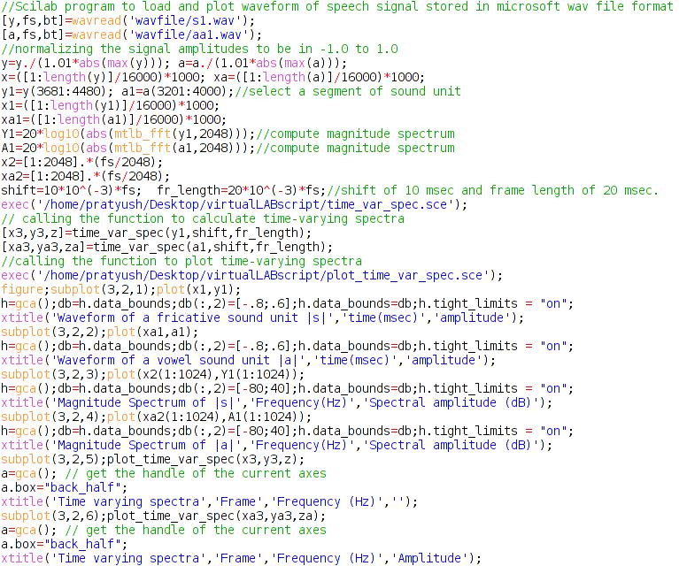
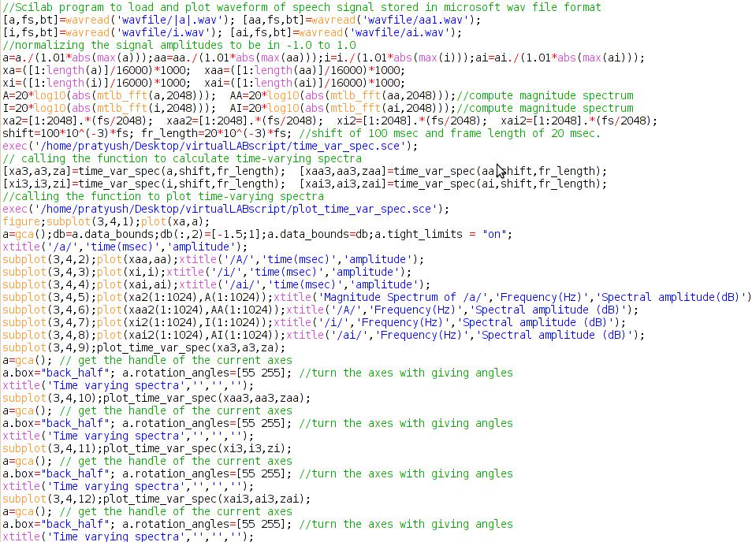
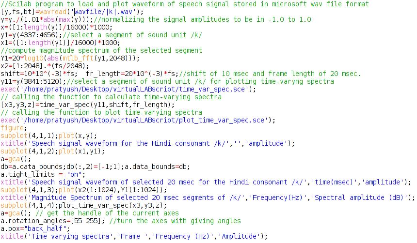
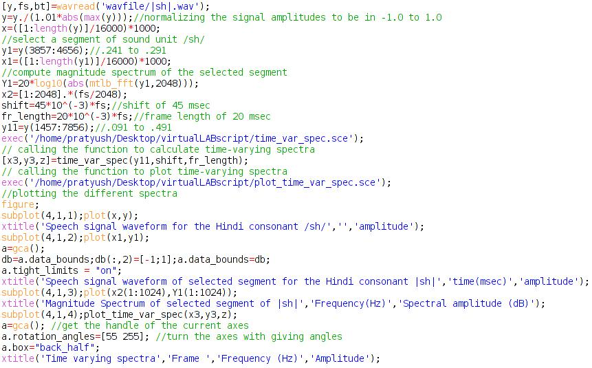
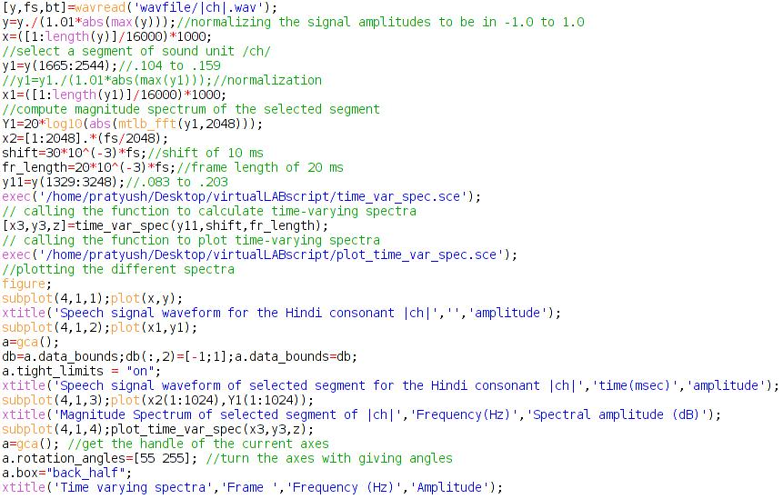
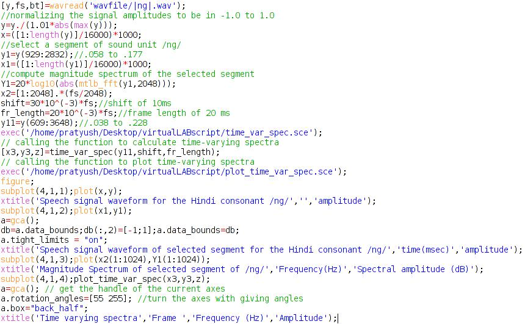
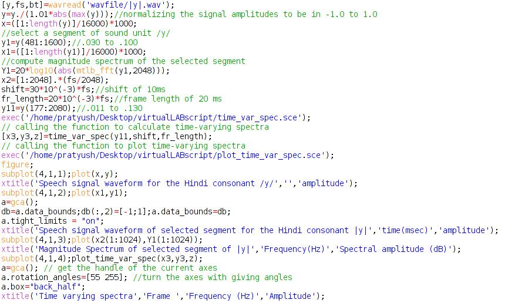

Shakshat Virtual Lab 
INDIAN INSTITUTE OF TECHNOLOGY GUWAHATI
The objective of this experiment is to study the characteristics of various sounds in Indian language. The procedures provided in this section is according to the explanations given in the theoretical section.
Vowels and Consonants
The following procedure gives the difference between vowels and consonants. The following procedure plots a segment of a fricative sound /s/ obtained from the syllable-like unit /sa/ and a long vowel sound /A/.

Short vowels, Long vowels and diphthongs
The following procedure plots the waveform, short term spectrum and time varying spectra of a segment of short vowel, long vowel and diphthong. The characteristics of the short, long and diphthongs as discussed in theory can be observed from the figure. The figure shows the waveform, spectra and time varying spectra of short vowel /a/, long vowel /A/, short vowel /i/ and diphthong /ai/. The characteristics of these vowels discussed in the theory can be observed from the plots.

Stop consonants
As given in theory the stop consonants can be categorized based on place of articulation (POA) and manner of articulation (MOA). The place of articulation and manner of articulation characteristics can be observed from the temporal, spectral and spectrogram plots of the given consonants. The following procedure plots the waveform, short term spectra and time varying spectra of various stop consonants described in the theory.
The Figures 4 ((a)-(d)) plots the temporal, spectral and time varying spectra of velar consonants /k/, /kh/, /g/, /gh/ respectively. The following points can be inferred from the plots,
- As there is no periodicity in the /k/ and /kh/, both the consonants are unvoiced
- Noise like waveform of the consonant /kh/ indicates the /kh/ is produced with aspiration where as /k/ is unaspirated
- As the consonant /g/ is voiced and un aspirated we can observe a smooth periodic waveform for /g/
- As /gh/ is produced with aspiration, the noise like behavior is observed in the waveform

In the similar lines, the characteristics of other stop consonants described in the theory can be observed.
Fricatives
Figure provides the waveform, short-term spectrum and time varying spectra of segment id fricative sound /sh/. As described in the theory, the fricative sound is mainly characterized by the turbulent air flow. In that case the waveform mostly looks like a random noise having energy mostly concentrated at higher frequency regions. Figure shows the increased magnitude at the higher frequency region in the short-term spectrum. Other fricative sounds include /s/, /shh/ and /h/. Different fricative sounds can be distinguished among themselves according to the energy concentration at various frequency regions.

Affricates
As described in the theory about the affricate sound units, the affricates have the characteristics of fricatives and stop consonants. The examples of affricates are /ch/, /chh/, /j/ and /jh/. The following procedure plots the waveform, short term spectrum and time varying spectra of affricates.
The following observations can be noted in case of affricates,
- Unlike other unvoiced and unaspirated stop consonants /ch/ aperiodic and turbulent in nature
- The effect of fricative source, the aspirated sound unit /chh/ looks more noisy than other unvoiced and aspirated consonants.
- The presence of turbulence at the end the voiced and unaspirated affricate /j/
- The waveform of /jh/ looks more noisy as compared to other voiced and aspirated consonants

Nasal
As described in the theory the various nasal sounds in Indian languages are /ng/, /nj/, /N/, /n/ and /m/. Figure shows the waveform, magnitude spectrum and time varying spectra of a nasal sounds. It has to be observed that all the nasal sounds are voiced and having some aspiration noise due to airflow through the nose.

It has to be observed tha the energy of nasal sounds are less compared to that of the vowels.
Semivowels
The semivowels in the Indian languages are /y/, /r/, /l/ and/w/. Figure shows the waveform, magnitude spectrum and time varying spectra of the semivowels.
